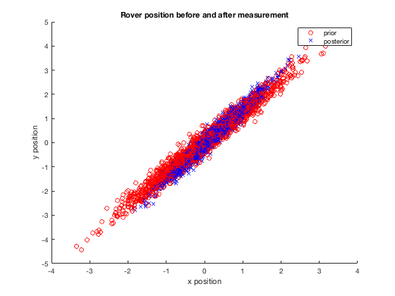

clear; close;
hold on;
mux = [0; 0];
sigmaxx = [0.7 0.73; 0.73 1.1];
sigmaxx_inv = 1\sigmaxx;
muy = [0; 0;];
sigmayy = [0.7 .19; .19 .16];
sigmayy_inv = 1\sigmayy;
sigmaxy = [0.63 0.23; .72 0.31];
sigmayx = sigmaxy;
y = [0.27; 0.62];
P = 0.95;
mu_x_y = mux + sigmaxy*sigmayy_inv*(y-muy);
sigma_x_y = sigmaxx - sigmaxy*sigmayy_inv*sigmayx;
sigma_x_y_inv = 1 \ sigma_x_y;
eps_prior = (1-P)/((2*pi)*det(sqrtm(sigmaxx)));
eps_post = (1-P)/((2*pi)*det(sqrtm(sigma_x_y)));
for i = 1:1000
prior{i} = sigmaxx*randn(2,1) + mux;
posterior{i} = sigma_x_y*randn(2,1) + mu_x_y;
if ((-0.5*(prior{1} - mux)' *sigmaxx_inv*(prior{1} - mux)) < eps_prior)
plot(prior{i}(1), prior{i}(2),'or');
end
if ((-0.5*(posterior{1} - mu_x_y)' *sigma_x_y_inv*(posterior{1} - mu_x_y)) < eps_post)
plot(posterior{i}(1), posterior{i}(2),'xb');
end
end
xlabel("x position");
ylabel("y position");
title("Rover position before and after measurement");
legend("prior", "posterior");
